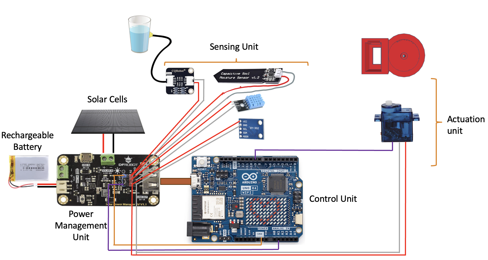

May 8, 2024: Problem definition, product survey insights and technical approach added.
April 24, 2024: Updated timeline and milestones. Created related work section.
April 20, 2024: Created product interest survey, please answer here!
The Green Guardian project addresses substantial economic losses in the houseplant industry, where a significant portion of plants perish annually due to neglect. This IoT device simplifies plant care to a near-autonomous level, focusing primarily on precise soil humidity management through its integrated watering system. Once installed, Green Guardian monitors soil moisture and adjusts watering schedules accordingly, ensuring plants receive exactly what they need without risk of over or underwatering. It also monitors environmental factors such as light and temperature and advises owners when adjustments are needed to maintain optimal conditions. Powered by an energy-harvesting system, the device minimizes its environmental footprint and operates independently of external power sources. With its cloud-connected capabilities, Green Guardian offers users remote monitoring and minimal interaction, making it an ideal solution for ensuring plant health with little to no effort. This device not only promises to extend the life of houseplants but also to transform plant care into a hassle-free, sustainable routine.
Americans invest approximately $16 billion annually in houseplants. Sadly, it is estimated that nearly half of these plants die due to improper care, which indicates a substantial gap in the consumer knowledge or available technology aiding in plant maintenance.
This situation presents a significant opportunity for innovation in the home gardening industry, particularly through the development of smart technologies that can reduce plant mortality rates and enhance user experience.
Week 1: Project kickoff, initial research, and component ordering are scheduled.
Week 2: Start of hardware assembly and basic software setup.
Week 4: Completion of the prototype assembly.
Week 5: Begin functional testing and iterate based on initial results.
Week 6: Development of the user interface and integration testing.
Week 7: Final testing, project documentation, and preparation for the demonstration.
Various researchers have explored the design of IoT-based smart plant monitoring systems. Judika et al. investigated the potential benefits of such a system in monitoring Chili plants in Indonesia [2]. Their system is capable of monitoring the moisture, pH, and salinity of the soil and autonomously adjusting these parameters using water, pH up/down liquid, and AB mix, respectively [2]. While the system functions effectively in the field, it is specifically designed to cater to a single type of plant. Kush et al. endeavored to broaden the scope of plant monitoring by introducing a smart pot [1]. However, this approach is marred by two significant flaws: users are required to replace their existing pots with smart pots, and the pot relies on a user to regularly charge its battery. Antti et al. devised an AI system capable of monitoring plant health, yet it relies on human intervention for plant care based on the interpreted data [3]. The limitations of previous research underscore the importance of developing a self-sufficient autonomous plant monitoring system.
The project proposes the creation of the Green Guardian, an IoT device designed to simplify plant care to a near-autonomous level. This device will manage watering schedules based on soil humidity data it collects, adjusting water delivery to the specific needs of each plant.
Key components of the device include sensors for soil moisture, ambient light, and temperature, a water delivery system, and a power management unit featuring solar energy harvesting. This integrated system ensures that plants receive optimal care without requiring constant human intervention.
A survey was conducted with 119 participants to gauge potential user interest in the Green Guardian. Questions aimed to assess how often individuals interact with their plants and their interest in a self-sustaining plant care system.
The survey results for the Green Guardian product reveal promising insights into the market's readiness and potential interest in an autonomous plant care solution. A majority of respondents interact with their plants frequently (daily or several times a week), indicating an existing commitment to plant care that the Green Guardian could support and enhance. Additionally, a significant number of respondents reported having plants that died prematurely, suggesting a prevalent challenge in maintaining plant health that the Green Guardian aims to address. Importantly, the strong inclination towards a self-contained watering system, with a substantial majority expressing interest, underscores the demand for such innovative solutions. This interest, coupled with respondents' willingness to invest in the price range of $20 to $60, positions the Green Guardian as a viable product in the houseplant care market.


Environmental factors that affect plant growth and include light, temperature, water, humidity and nutrition.[16] The first four parameters: light, temperature, humidity and soil moisture (through watering) are readily measurable using cost-effective off-the-shelf sensors, which we procured. Nutrition is tougher to sense and requires more expensive approaches such as spectroscopy, wifi signal, pH, ion-selective electrodes. Since our design goals require an affordable solution, we decided to forgo the pH sensor (cheapest option would cost $70).
As we do not want affordability of the system to compromise the quality, we needed to calibrate the sensors so that the data they produce is reliable. We began with calibrating our DHT11 temperature and humidity sensor. The below method involved taking initial readings from the sensor and comparing it to the temperature and humidity values as measured by an iPhone. We then calibrated the sensor readings to the correct value through one-stop calibration.